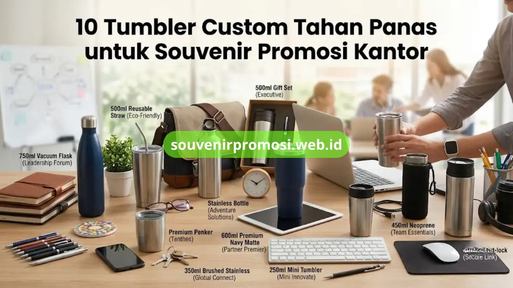

Poin Penting
- Tumbler custom stainless steel dua lapis (double wall) adalah pilihan paling tahan panas untuk souvenir promosi.
- Kapasitas 350 ml hingga 500 ml paling umum dipakai untuk souvenir kantor dan hadiah klien.
- Cetak logo dapat menggunakan teknik laser engraving, sablon, atau UV printing tergantung desain.
- Souvenir Promosi menyediakan pemesanan custom mulai dari desain, sampel, hingga produksi massal.
- Pemesanan tumbler custom untuk souvenir promosi dapat dilakukan langsung melalui souvenirpromosi.web.id.
Daftar Isi
- Pendahuluan
- 1. Tumbler Custom Stainless Steel Double Wall 500 ml
- 2. Tumbler Custom Tutup Ulir Anti Bocor 350 ml
- 3. Tumbler Custom dengan Sedotan Stainless Reusable
- 4. Tumbler Custom Vacuum Flask Kapasitas 750 ml
- 5. Tumbler Custom Model Sport Bottle Stainless
- 6. Tumbler Custom Warna Matte Premium
- 7. Tumbler Custom Kapasitas Mini 250 ml
- 8. Tumbler Custom dengan Case Neoprene
- 9. Tumbler Custom Twist Lock Anti Tumpah
- 10. Tumbler Custom Edisi Gift Set Korporat
- Berapa Kapasitas Tumbler Custom yang Ideal?
- Teknik Cetak Apa yang Membuat Logo Tahan Lama?
- Kesimpulan
- FAQ
Pendahuluan
Tumbler custom tahan panas berbahan stainless steel adalah pilihan souvenir promosi yang paling banyak dicari perusahaan karena tahan lama, terlihat premium, dan mampu menjaga suhu minuman panas maupun dingin. Berikut 10 pilihan tumbler custom tahan panas yang dapat dicetak logo perusahaan dan dipesan langsung melalui Souvenir Promosi. Setiap model pada daftar ini dipilih berdasarkan kapasitas, ketebalan dinding stainless steel, dan kesesuaiannya untuk kebutuhan branding korporat.
1. Tumbler Custom Stainless Steel Double Wall 500 ml
Tumbler custom stainless steel double wall 500 ml adalah pilihan utama untuk souvenir promosi karena mampu menahan panas dan dingin dalam waktu lama berkat konstruksi dua lapis dengan ruang vakum di tengahnya. Model ini cocok dicetak dengan logo perusahaan berukuran besar di bagian depan tumbler.
Kapasitas 500 ml membuat tumbler ini nyaman dipakai sehari-hari oleh karyawan maupun klien, sehingga logo perusahaan lebih sering terlihat. Souvenir Promosi menyediakan opsi warna stainless polos, matte, maupun glossy untuk model ini.
Pesan tumbler custom double wall 500 ml untuk souvenir promosi perusahaan Anda melalui souvenir promosi.web.id/.
2. Tumbler Custom Tutup Ulir Anti Bocor 350 ml
Bagaimana memilih tumbler custom yang aman dibawa bepergian? Tumbler dengan tutup ulir anti bocor kapasitas 350 ml menjawab kebutuhan ini karena desainnya mencegah tumpahan saat dibawa di dalam tas kerja. Bahan stainless steel food grade menjaga rasa minuman tetap netral.
Ukuran 350 ml termasuk kompak sehingga sering dipilih sebagai souvenir promosi untuk seminar, workshop, atau goodie bag acara korporat. Area cetak logo tersedia di badan tumbler dengan hasil tahan gesek.
Cek ketersediaan stok tumbler tutup ulir anti bocor untuk kebutuhan souvenir promosi massal di Souvenir Promosi
3. Tumbler Custom dengan Sedotan Stainless Reusable
Tumbler custom yang dilengkapi sedotan stainless reusable memberikan nilai tambah karena mendukung kampanye ramah lingkungan perusahaan. Konsep ini banyak dipilih untuk souvenir promosi bertema sustainability atau CSR korporat.
Sedotan stainless dapat dilepas pasang dan dibersihkan terpisah, sementara badan tumbler tetap mempertahankan sifat tahan panas dari lapisan stainless steel. Logo perusahaan dapat dicetak pada badan tumbler maupun pouch penyimpanan sedotan.
Diskusikan kebutuhan desain tumbler bersedotan untuk program CSR perusahaan Anda bersama tim Souvenir Promosi di Souvenir Promosi
4. Tumbler Custom Vacuum Flask Kapasitas 750 ml
Vacuum flask kapasitas 750 ml adalah pilihan tumbler custom untuk souvenir promosi yang menyasar segmen eksekutif atau hadiah untuk mitra bisnis dan investor. Kapasitas besar membuatnya cocok dipakai saat perjalanan dinas maupun aktivitas outdoor.
Ketebalan dinding stainless steel pada model ini umumnya lebih tinggi dibanding tumbler kapasitas kecil, sehingga daya tahan panas dapat lebih lama. Desain silinder ramping tetap memberi ruang cetak logo yang luas dan jelas terbaca.
Tanyakan spesifikasi lengkap vacuum flask 750 ml untuk souvenir promosi eksekutif di Souvenir Promosi
5. Tumbler Custom Model Sport Bottle Stainless
Apa perbedaan tumbler sport bottle dengan tumbler kantor biasa? Sport bottle stainless dirancang dengan pegangan ergonomis dan tutup flip top yang praktis dibuka satu tangan, cocok untuk souvenir promosi acara olahraga atau fun run korporat.
Meski bergaya sporty, bahan stainless steel pada model ini tetap mempertahankan sifat tahan panas standar tumbler custom lainnya. Logo perusahaan dapat dicetak di sisi badan botol dengan area cetak lebar.
Pesan tumbler sport bottle custom untuk event olahraga perusahaan Anda melalui Souvenir Promosi

6. Tumbler Custom Warna Matte Premium
Tumbler custom dengan finishing warna matte premium memberikan kesan elegan dan sering dipilih sebagai souvenir promosi untuk klien VIP atau hadiah ulang tahun perusahaan. Pilihan warna matte yang umum tersedia meliputi hitam, navy, abu tua, dan rose gold.
Permukaan matte juga membuat hasil cetak logo laser engraving terlihat lebih kontras dan premium dibanding permukaan glossy. Model ini biasanya dikombinasikan dengan kemasan box eksklusif.
Konsultasikan pilihan warna matte premium untuk souvenir promosi klien VIP Anda di Souvenir Promosi
7. Tumbler Custom Kapasitas Mini 250 ml
Tumbler kapasitas mini 250 ml adalah pilihan souvenir promosi yang ekonomis untuk pembagian dalam jumlah besar, seperti seminar nasional atau pembagian merchandise ke seluruh karyawan. Ukurannya yang ringkas tetap mempertahankan konstruksi stainless steel tahan panas.
Model ini cocok untuk perusahaan yang ingin membagikan souvenir promosi tumbler custom dengan anggaran per unit yang lebih terjangkau tanpa mengurangi kesan branding.
Minta simulasi harga tumbler mini 250 ml untuk pembagian massal di Souvenir Promosi
8. Tumbler Custom dengan Case Neoprene
Tumbler custom yang dilengkapi case neoprene memberikan perlindungan tambahan saat dibawa bepergian dan menambah area cetak logo pada bagian luar case. Kombinasi ini sering dipilih untuk souvenir promosi paket lengkap yang terasa lebih premium saat diterima penerima.
Case neoprene juga membantu menjaga suhu di dalam tumbler lebih stabil karena berfungsi sebagai lapisan insulasi tambahan di luar badan stainless steel.
Lihat pilihan tumbler dengan case neoprene untuk souvenir promosi paket lengkap di Souvenir Promosi
9. Tumbler Custom Twist Lock Anti Tumpah
Bagaimana tumbler custom menjaga keamanan saat digenggam dan dibawa aktif? Sistem twist lock anti tumpah mengunci tutup secara rapat sehingga cocok untuk souvenir promosi yang ditujukan bagi karyawan lapangan atau tim sales yang sering bepergian.
Selain fungsi keamanan, model twist lock tetap mempertahankan kemampuan tahan panas standar tumbler stainless steel double wall, menjadikannya pilihan seimbang antara fungsi dan branding.
Pesan tumbler twist lock anti tumpah untuk tim lapangan perusahaan Anda di Souvenir Promosi
10. Tumbler Custom Edisi Gift Set Korporat
Tumbler custom dalam format gift set korporat menggabungkan tumbler stainless steel dengan aksesori tambahan seperti pouch, kartu ucapan, atau boks eksklusif bertema perusahaan. Format ini paling sering dipilih untuk souvenir promosi akhir tahun, ulang tahun perusahaan, atau hadiah untuk mitra bisnis.
Gift set memberi kesan lebih personal dibanding tumbler tunggal, sekaligus memperkuat identitas visual perusahaan melalui kemasan yang turut dicetak logo dan warna korporat.
Diskusikan konsep gift set tumbler custom untuk momen spesial perusahaan Anda melalui Souvenir Promosi
Berapa Kapasitas Tumbler Custom yang Ideal untuk Souvenir Promosi?
Kapasitas 350 ml hingga 500 ml umumnya dianggap paling ideal untuk souvenir promosi kantor karena mudah dibawa sehari-hari sekaligus memberi ruang cetak logo yang cukup luas. Perusahaan yang menyasar segmen eksekutif dapat memilih kapasitas 750 ml, sementara pembagian massal dengan anggaran terbatas dapat memilih kapasitas 250 ml.
Pemilihan kapasitas sebaiknya disesuaikan dengan tujuan pemakaian, apakah untuk pemakaian harian di kantor, dibawa bepergian, atau sekadar sebagai suvenir seremonial.
Teknik Cetak Apa yang Membuat Logo pada Tumbler Custom Tahan Lama?
Teknik laser engraving dan UV printing umumnya menghasilkan cetakan logo yang lebih tahan lama pada permukaan stainless steel dibanding sablon manual, karena tidak mudah pudar akibat gesekan atau pencucian. Souvenir Promosi menyesuaikan teknik cetak berdasarkan desain logo dan jumlah pemesanan.
Laser engraving cocok untuk desain logo satu warna dengan kesan elegan, sedangkan UV printing lebih sesuai untuk logo full color dengan detail gradasi.
Kesimpulan
Tumbler custom tahan panas berbahan stainless steel tetap menjadi pilihan souvenir promosi yang efektif untuk membangun citra perusahaan, baik untuk karyawan, klien, maupun mitra bisnis. Dari sepuluh model di atas, pilihan terbaik sebaiknya disesuaikan dengan tujuan pemakaian, target penerima, dan anggaran perusahaan.
Untuk memesan tumbler custom tahan panas sebagai souvenir promosi perusahaan Anda, kunjungi https://souvenirpromosi.web.id/ dan konsultasikan kebutuhan desain, kapasitas, serta jumlah pemesanan bersama tim Souvenir Promosi sekarang.